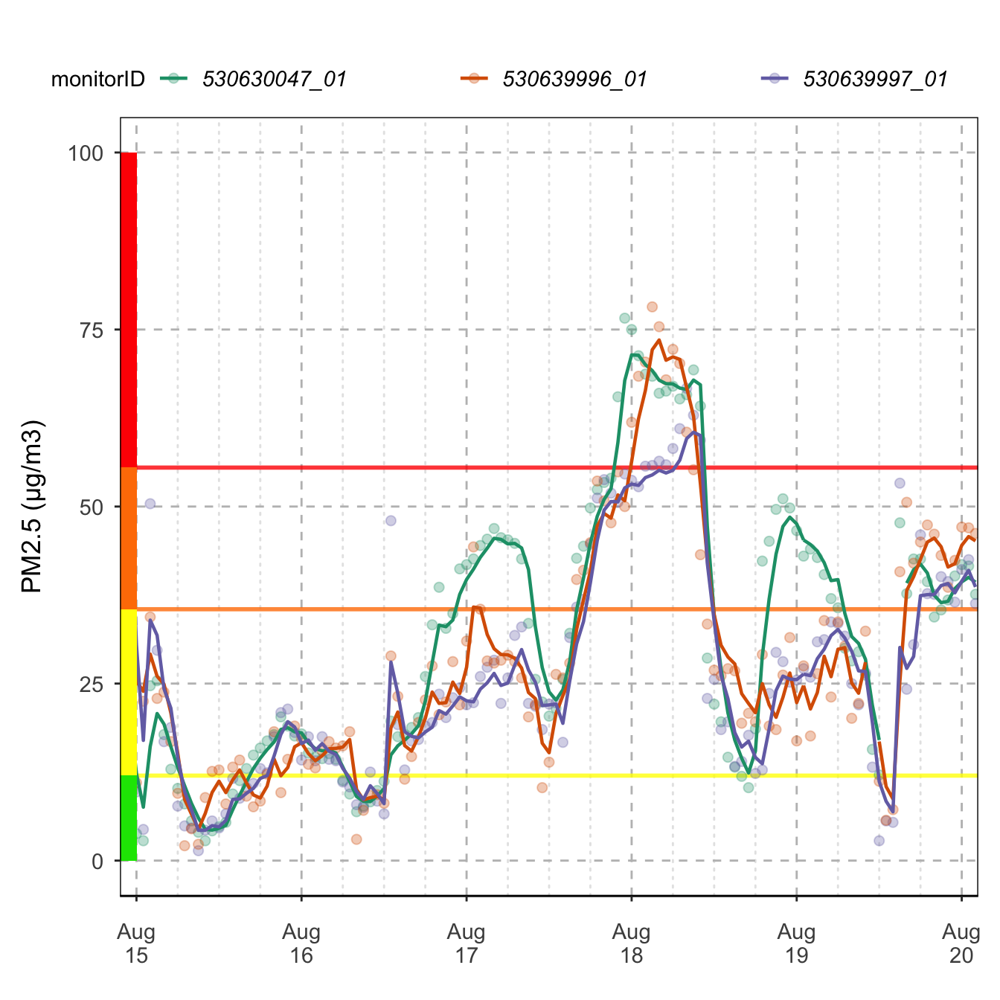
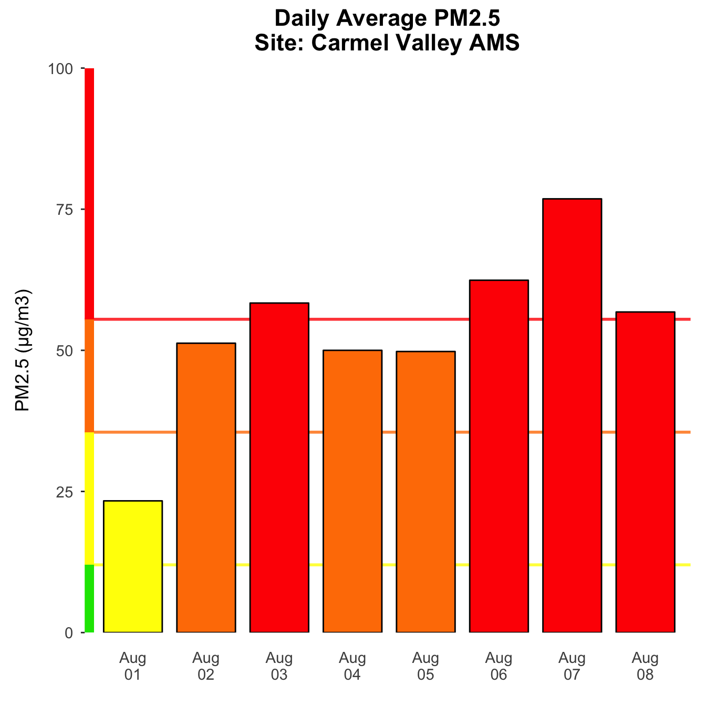
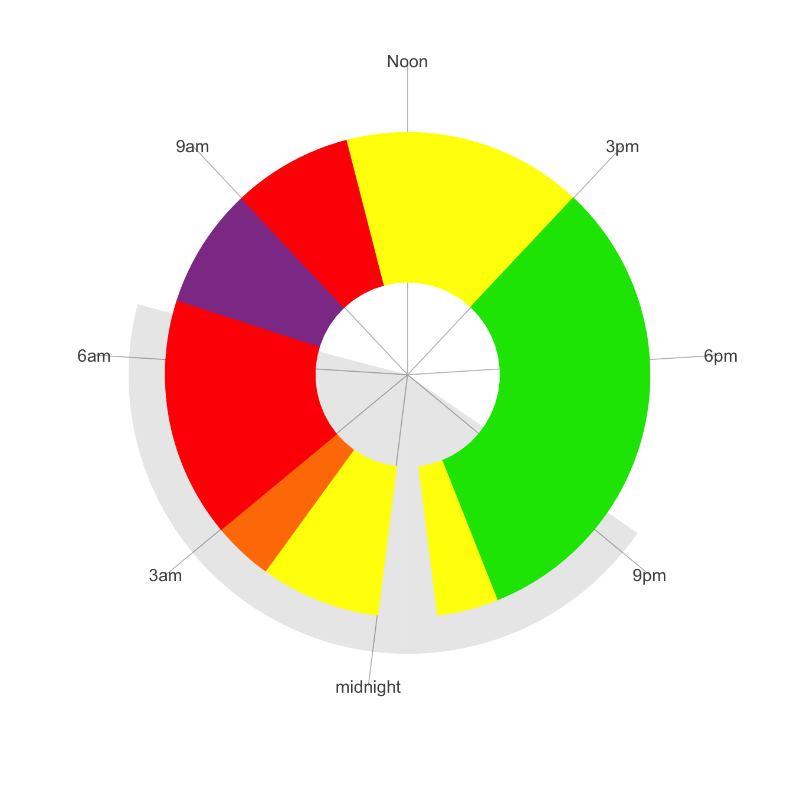
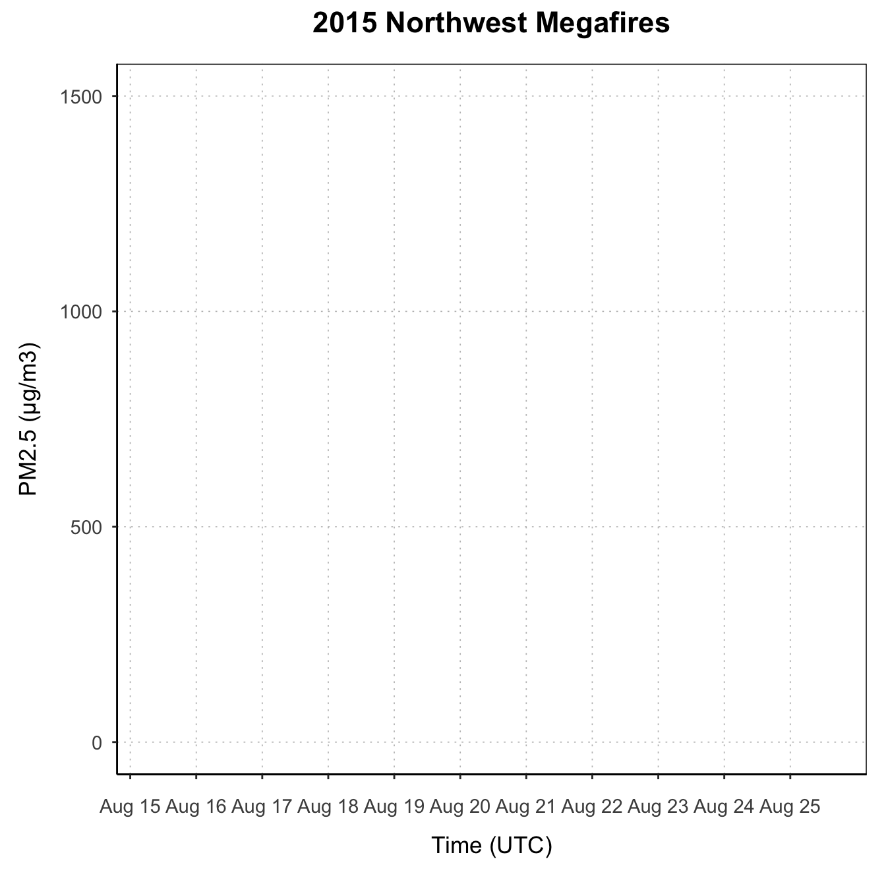
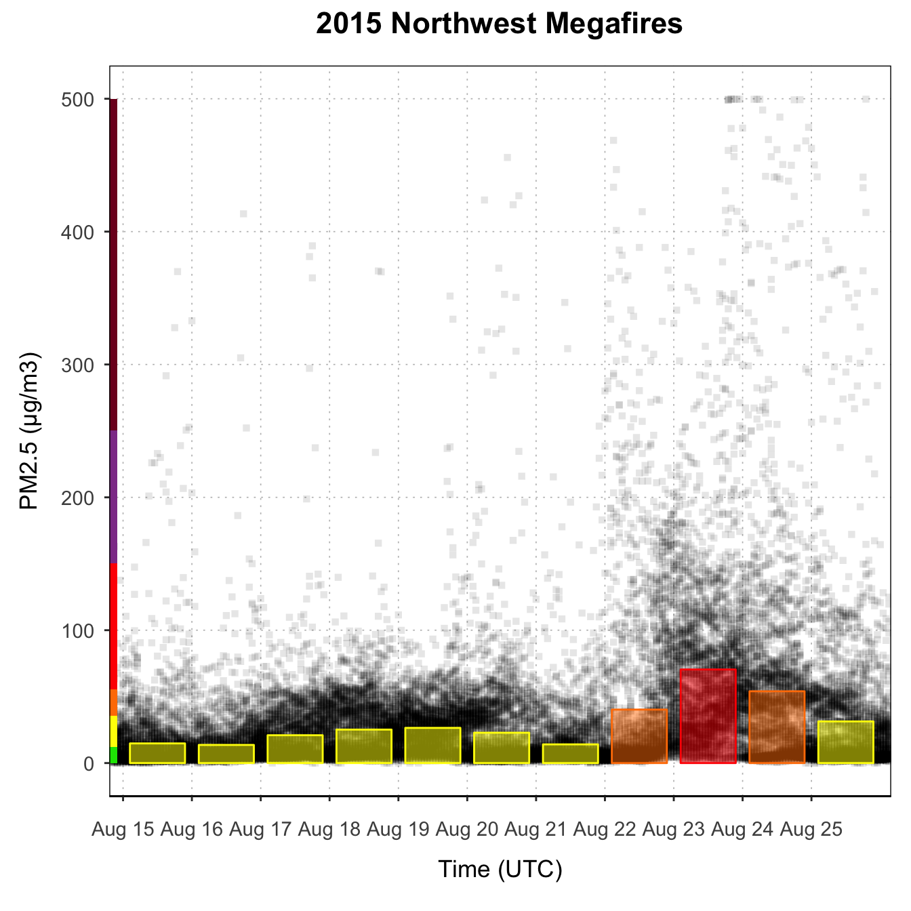
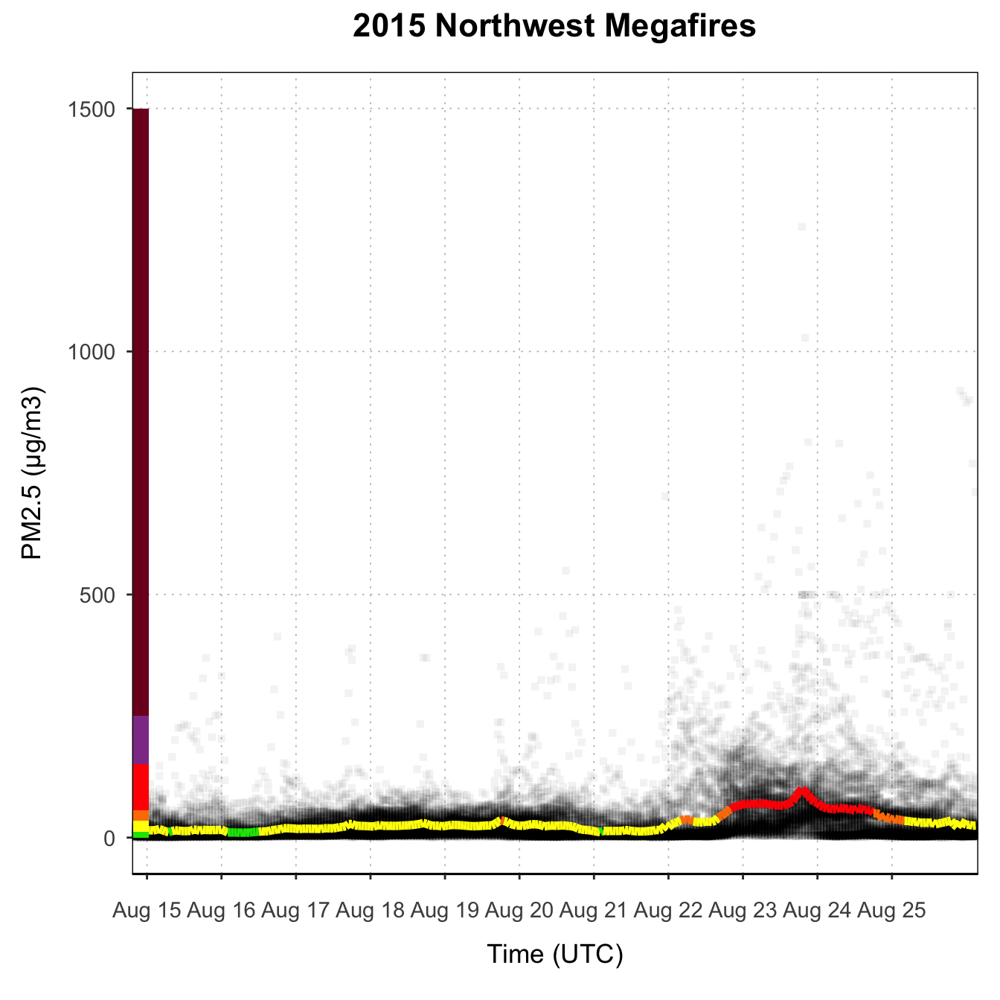
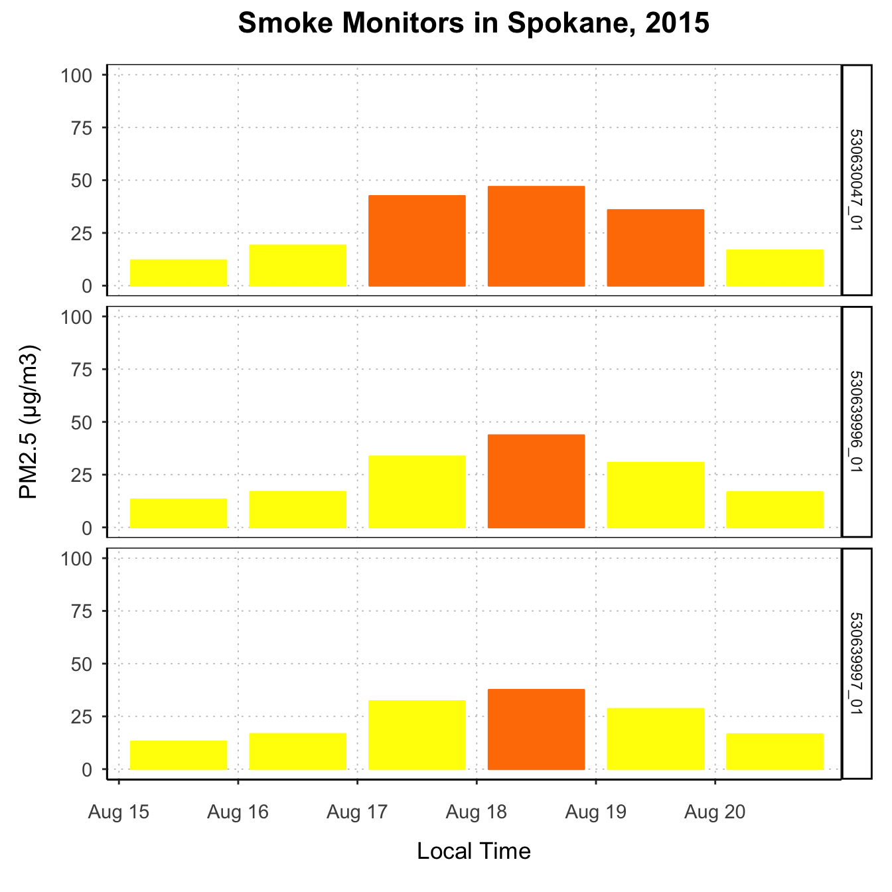
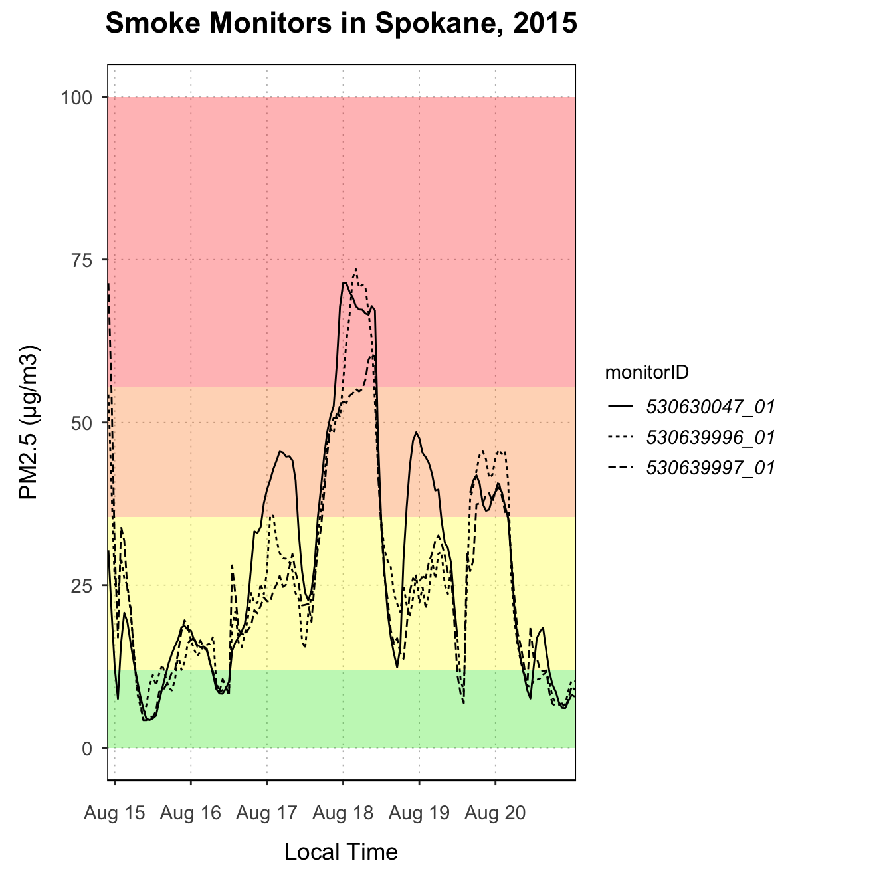
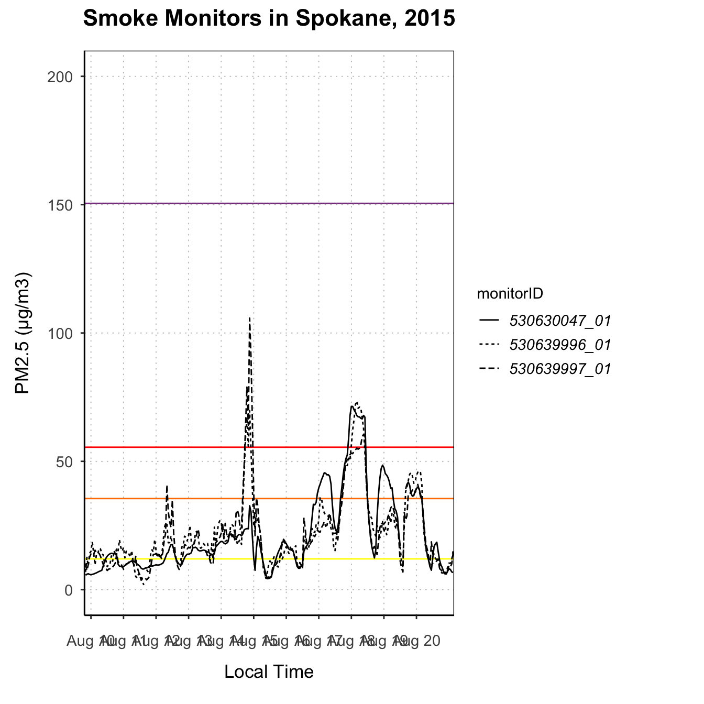
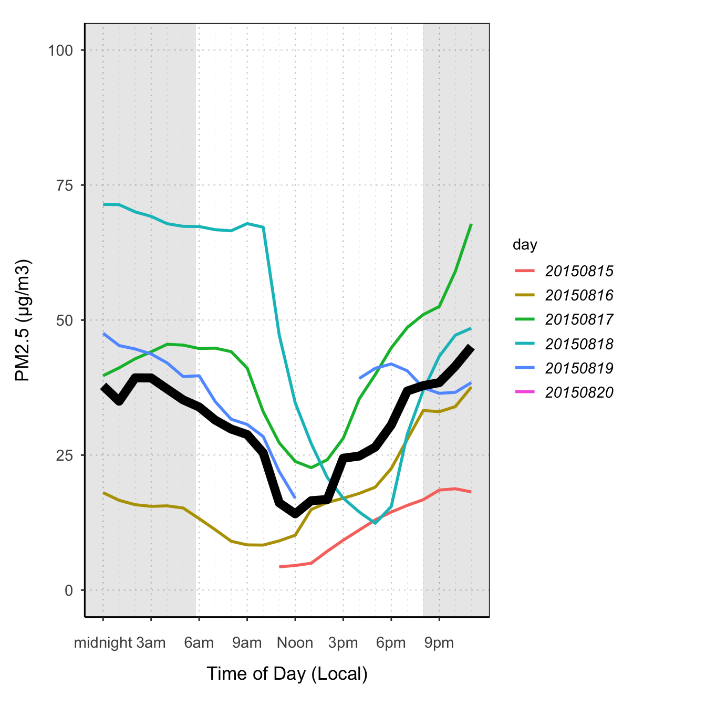

Introduction to PWFSLSmokePlots
Helen Miller
Jan 17, 2019
Source:vignettes/PWFSLSmokePlots.Rmd
PWFSLSmokePlots.RmdPWFSLSmokePlots provides plotting functionality to create production-ready plots using air quality monitoring data based on the data model from PWFSLSmoke. It builds on the PWFLSmoke package, integrating the data with ggplot2 plotting functions. High-level plotting functions make it easy for users to create beautiful plots of monitoring data. Since these functions are built on ggplot2, users familiar with ggplot2 can easily use the functions in this package to create custom plots.
Production-ready plots
High-level functions in this package make it easy to create beautiful plots with very few lines of code.
Timeseries
The default Timeseries plot is optimized for one monitor.
library(PWFSLSmoke)
library(PWFSLSmokePlots)
monitor_ggTimeseries(PWFSLSmoke::Northwest_Megafires,
monitorIDs = "160050015_01",
startdate = 20150815,
enddate = 20150825)
If more than one monitor is present, color will be mapped to monitorID.
monitor_ggTimeseries(PWFSLSmoke::Northwest_Megafires,
monitorIDs = c("530630047_01",
"530639997_01",
"530639996_01"),
startdate = 20150815,
enddate = 20150820)
Daily Barplot
Daily Barplot can show daily averages for one monitor.
monitor_ggDailyBarplot(ws_monitor = PWFSLSmoke::Carmel_Valley,
startdate = 20160801,
enddate = 20160808)
It can also show aggregated daily averages for many monitors.
monitor_ggDailyBarplot(PWFSLSmoke::Northwest_Megafires,
startdate = 20150820,
enddate = 20150825)
If using current data, it will include a bar for “today”, displaying the current NowCast, if available.
latest <- airnow_loadLatest()
monitor_ggDailyBarplot(latest,
startdate = lubridate::now() - lubridate::ddays(7),
monitorID = "060631010_01")
Daily By Hour
The dailyByHour plot is designed to view current data for only one monitor. It can show daily trends in air quality.
latest <- airnow_loadLatest()
monitor_ggDailyByHour(latest,
monitorID = "060631010_01")
The dailyByHour is designed specifically to show current data, with special lines for “today” and “yesterday”. However, it can plot historical data, using the enddate for “today”.
monitor_ggDailyByHour(PWFSLSmoke::Carmel_Valley,
startdate = 20160801,
enddate = 20160809)
Clock Plot
The colors on the clock plot show the mean AQI level (represented by color) throughout the day.
monitor_ggClockPlot(PWFSLSmoke::Carmel_Valley,
startdate = 20160801,
enddate = 20160809) 
Custom Plots
High-level plotting functions create plots by adding custom layers and styling, returing a ggplot object. The package extends ggplot2, including custom geoms, stats, and themes, as well as some custom_* functions which combine layers and other styling options to make consistent and appropriately styled plots. A plot can be instantiated with a ggplot_* function. Choose the correct function, depending on the type of plot. Then, layers and styling can be added with functions from this package or ggplot2 functions. This section demonstrates how these pieces work together, and shows some examples of the kinds of custom plots that can be made using this functionality.
pm25Timeseries plots
The most basic type of plot for PWFSL monitoring data is timeseries plots: plots that have time on the x-axis and PM2.5 on the y-axis. Timeseries plots should start with a call to ggplot_pm25Timeseries, which accepts either a ws_monitor object, or a ws_tidy object, created from monitor_toTidy(ws_monitor). This instantiates the plot mapping the data to the correct axes, and adds some custom styling and scaling.
Many Monitors
nmPlot <- ggplot_pm25Timeseries(Northwest_Megafires,
startdate = 20150815,
enddate = 20150825) +
ggtitle("2015 Northwest Megafires")
nmPlot
Once the plot is initiated, you can add layers.
nmPlot +
geom_pm25Points(shape = "square", alpha = .1) +
stat_dailyAQCategory(alpha = .5) +
scale_y_continuous(limits = c(0, 500)) +
custom_aqiStackedBar(width = 0.01) 
nmPlot +
geom_pm25Points(alpha = 0.05, shape = "square") +
stat_meanByHour(geom = "line", size = 2, output = "AQIColors")+
custom_aqiStackedBar()
Several Monitors
# Subset out several monitors near Spokane
monitorIDs <- c("530630047_01", "530639997_01", "530639996_01")
spokane <- monitor_subset(Northwest_Megafires, monitorIDs = monitorIDs)
spokanePlot <- ggplot_pm25Timeseries(spokane,
startdate = 20150815,
enddate = 20150820) +
ggtitle("Smoke Monitors in Spokane, 2015")
spokanePlot +
geom_pm25Points(aes(color = monitorID)) +
stat_nowcast(aes(color = monitorID))spokanePlot +
stat_dailyAQCategory(timezone = "America/Los_Angeles") +
facet_grid(rows = vars(monitorID))
spokanePlot +
stat_AQCategory(color = NA) +
stat_dailyAQCategory(alpha = .5, timezone = "America/Los_Angeles") +
facet_grid(rows = vars(monitorID)) 
spokanePlot +
custom_aqiStackedBar(width = 1, alpha = .3) +
stat_nowcast(aes(linetype = monitorID))
spokanePlot +
custom_aqiLines() +
stat_nowcast(aes(linetype = monitorID)) +
custom_pm25TimeseriesScales(spokane, startdate = 20150810, enddate = 20150820) 
pm25Diurnal plots
There are also some functions designed to create diurnal plots – plots designed to show daily trends. They should start with a call to ggplot_pm25Diurnal.
One monitor
This type of plot is best suited for exploring one monitor, although a savvy ggplot2 user could certainly create useful and attractive diurnal plots representing multiple monitors. Like ggplot_pm25Timeseries, ggplot_pm25Diurnal simply instantiates the plot without adding any layers yet. By default, it includes day/night shading, although this can be turned off by specifying shadedNight = FALSE.
monitorID <- "530630047_01"
monroeStMonitor <- monitor_subset(Northwest_Megafires, monitorIDs = monitorID)
ggplot_pm25Diurnal(monroeStMonitor)After instantiating the plot, you can add layers. stat_meanByHour is a stat specifically designed for this type of plot, which calculates the mean y-value for each x-value. You can also use the ‘group’ aesthetic to tell a stat to do calculations by a group such as hour or day. There is also an offsetBreaks option, which, if TRUE, will offset the x-axis guides and ticks by 0.5, which is useful for plots like boxplots where you might want the boxes to be between the hour ticks instead of lined up with them. For example:
# offsetBreaks = FALSE. Notice that bars cover the x-axis guides
ggplot_pm25Diurnal(PWFSLSmoke::Carmel_Valley,
startdate = 20160801,
enddate = 20160810) +
stat_meanByHour(output = "AQIColors")
# offsetBreaks = TRUE
ggplot_pm25Diurnal(PWFSLSmoke::Carmel_Valley,
startdate = 20160801,
enddate = 20160810,
offsetBreaks = TRUE) +
stat_meanByHour(outpu = "AQIColors")Other examples
ggplot_pm25Diurnal(PWFSLSmoke::Carmel_Valley,
startdate = 20160801,
enddate = 20160810,
offsetBreaks = TRUE) +
geom_boxplot(aes(group = hour)) +
custom_aqiStackedBar()
ggplot_pm25Diurnal(monroeStMonitor,
startdate = 20150815,
enddate = 20150820) +
stat_nowcast(aes(color = day), geom = "path", size = 1) +
stat_meanByHour(geom = "line", size = 3) 
ggplot_pm25Diurnal(spokane,
startdate = 20150815,
enddate = 20150820) +
stat_meanByHour(aes(color = monitorID), geom = "path")
# "clock" plot
ggplot_pm25Diurnal(monroeStMonitor,
startdate = 20150815,
enddate = 20150820,
offsetBreaks = TRUE,
xexp = c(1/46, 1/46)) +
coord_polar(start = pi) +
stat_meanByHour(aes(y = 75, xmin = 50), input = "pm25", output = "AQIColors", width = 1, color = adjustcolor("black", .2)) +
geom_pm25Points()
ggplot_pm25Diurnal(PWFSLSmoke::Carmel_Valley) +
stat_nowcast(size = 5, alpha = .05, geom = "point")Extending the preset plots
All of the preset plots (tidy_gg...) generate ggplot objects, so you can start with these and add more layers or customize them by adding themes.
monitor_ggClockPlot(PWFSLSmoke::Carmel_Valley,
startdate = 20160801,
enddate = 20160809) +
stat_meanByHour(fill = adjustcolor("white", .6), color = "black") +
ggtitle("Carmel Valley:\n Air quality by time of day")
monitor_ggTimeseries(PWFSLSmoke::Carmel_Valley,
startdate = 20160801,
enddate = 20160809) +
theme_classic()
monitor_ggDailyByHour(PWFSLSmoke::Carmel_Valley,
startdate = 20160801,
enddate = 20160809) +
geom_line(aes(group=day), alpha = .5)
monitor_ggDailyBarplot(PWFSLSmoke::Carmel_Valley,
startdate = 20160801,
enddate = 20160809) +
stat_nowcast(geom = "pm25Points")